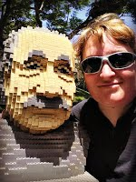

What is the Oregon Summit, featuring Google Apps for Education?
It's a free, educator-led day of learning, sharing, and fun. The focus is Google Apps for Education, a suite of tools that encourages collaboration, sharing, and mobility.
This is our sixth annual Oregon Summit. We have improved and grown each year. We hope you'll join us at Hillsboro High School or McNary High School.
2015 Keynote Speaker Laura Nickerson
Laura Nickerson is a Science teacher and coach at Mazama High School in Klamath Falls, Oregon. Laura is also a fantastic tech trainer and professional development coach who loves her Google Apps for Education! Laura manages face-to-face and virtual sessions—and sometimes both at the same time!—with ease, while helping everyone laugh and learn. We are thrilled to have her keynote for us this year.